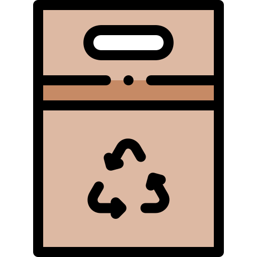
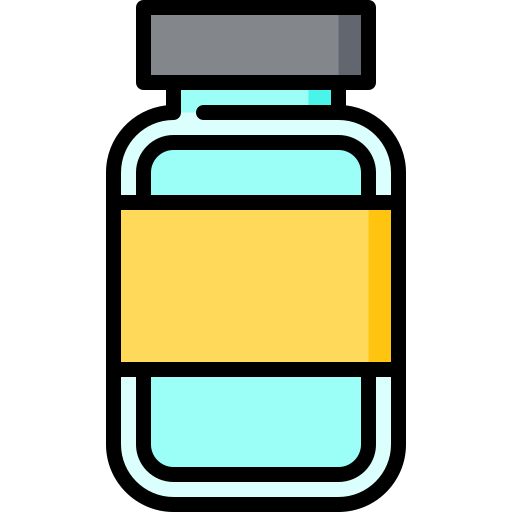
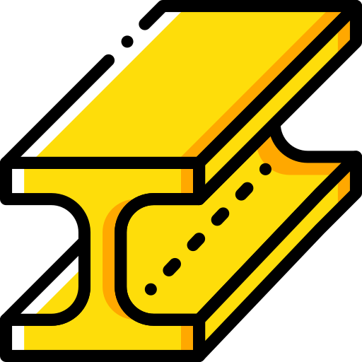

Tarjeta 1 - Papel y cartón
Carpetas, cuadernos, papeles, cajas, envases de cartón, diarios, revistas, fotocopias

Tarjeta 2 - Plástico
Tapas, bolsas, envases de comida y bebida, vasos y cubiertos descartables, macetas, sillas, mesas, CDs, DVDs

Tarjeta 3 - Vidrio
Envases de alimentos, frascos, botellas

Tarjeta 4 - Metal
Latas, aluminio, hierro, llaves, cobre, pilas